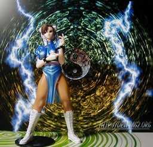
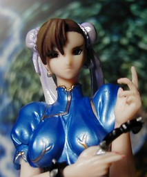

ユージン SR ファイティングJAM編 春麗 (シークレット)

正面
顔のアップ ユージン SR カプコンリアルフィギュアコレクション ファイティング JAM 編のシークレット、春麗です。顔が元のイメージとはだいぶ違う気がしますが、ミニフィギュアの春麗の中で一番美人に見えたので買ってしまいました。 背景 は http://dew.mg2.org/ のものです。 更新：06/02/15 初公開：2006年02月15日 00:38:16
Links:
ユージン: http://www.yujin-figure.com/ (hbm)
背景: http://dew.mg2.org/portfolio/x_pic/looking_glass_800.jpg